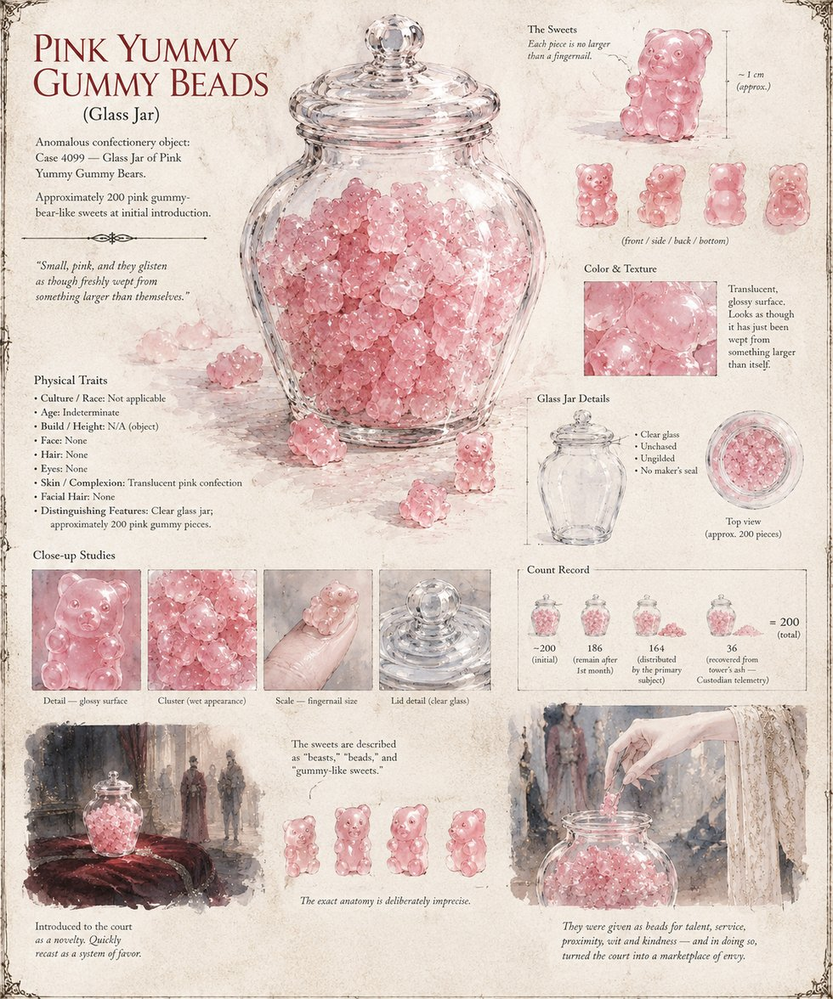

The Sweets
Pink Yummy Gummy Beads · the Catalyst of Case 4099
The object at the center of the case: a clear, unchased glass jar holding roughly two hundred small, glossy pink confections, introduced to the court as a passing novelty by the Observer and immediately recast as a currency of favor. The court never settles on what to call them — “beasts,” “beads,” “sweets,” each used as though it were the obvious word — and the Cultivators' own instruments log the anatomy of a single piece as deliberately imprecise. A hundred and eighty-six remain after the first month; a hundred and sixty-four are eventually distributed by the Principal Handmaid herself. Custodian telemetry recovers thirty-six, unclaimed, from the ash of the tower where the case ends.
“Small, pink, and they glisten as though freshly wept from something larger than themselves.”
Appears in The Ledger of a Single Sweetness